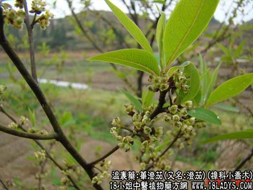

【中药概述】
荜澄茄，别名澄茄、毗陵茄子、毕茄，为樟科小乔木或灌木山鸡椒的成熟果实。辛、温。归脾、胃、肾、膀胱经。
1．温中下气：用于胃寒疼痛、胃寒引起的呕吐、呃逆等症，有温暖脾胃、散寒止痛之效，常与高良姜等配伍。如（丹溪心法<四神丸>）。
2．散寒止痛：用于寒疝疼痛等症，常配香附，乌药，吴茱萸等同用。
【药效鉴别】
荜澄茄湿中散寒，并能行气止痛利水，入下焦治寒疝疼痛，膀胱寒凝，小便不利。
【药理作用】
荜澄茄对粘膜有局部刺激作用，并能吸收，对泌尿道及呼吸道粘膜也能挥发此种作用。
【化学成分】
含挥发油、树脂、荜澄茄酸、荜澄茄素、荜澄酸等。
【用量用法】
2——5g，水煎服。或入丸、散剂。